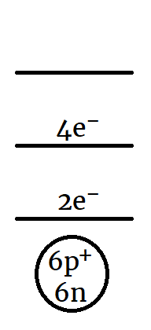

Emission Spectra
When electricity is passed through a tube containing a single gas, a “discrete emission spectrum” is observed.

- Only certain lines (colours) are produced.
- Each pure substance produces its own unique set of colours.
- Light sources like the Sun or a tungsten filament produce a continuous rainbow of colour.

Bohr Model
Niels Bohr (1913) proposed a change to the Planetary Model to explain the emission lines.
- According to Bohr, electrons are not allowed to orbit just anywhere.
- There are specific orbits, or energy levels, where electrons must orbit.
- Atoms emit light when an electron “jumps” from a higher to a lower energy level.
- The colours that any atom can emit are determined by the differences between the energy levels.
Energy Levels & the Periodic Table
The Bohr model explains the layout of the periodic table...
- Each energy level only has room for a certain number of electrons.
- Higher energy levels can accommodate more electrons.
- The capacity of each energy level determines how many elements can fit in each row of the Periodic Table.
- There are two elements in the first row of the periodic table because the first energy level can hold a maximum of two electrons.
- There are eight elements in rows 2 and 3 because energy levels \(n = 2\) and \(n = 3\) can hold a maximum of eight electrons each.
Energy Level Diagram
At low temperatures, the six electons of a carbon atom would be located as follows:
- Two electrons (the maximum) in \(n = 1\).
- Four electrons in \(n = 2\).
- The higher levels would be empty.
A simplified energy level diagram (also called a Bohr diagram) could be drawn as follows:

- The highest occupied energy level (\(n = 2\) in this example) is the valence level.
- A carbon atom has four valence electrons.
- Valence electrons determine the chemical properties of an atom.